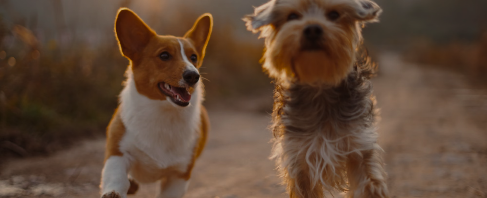
Faites un don
10 €
permet de nourrir 5 animaux pendant une journée
20 €
permet d'héberger un animal sauvage pendant une nuit
50 €
permet de financer les soins vétérinaires complets pour un animal
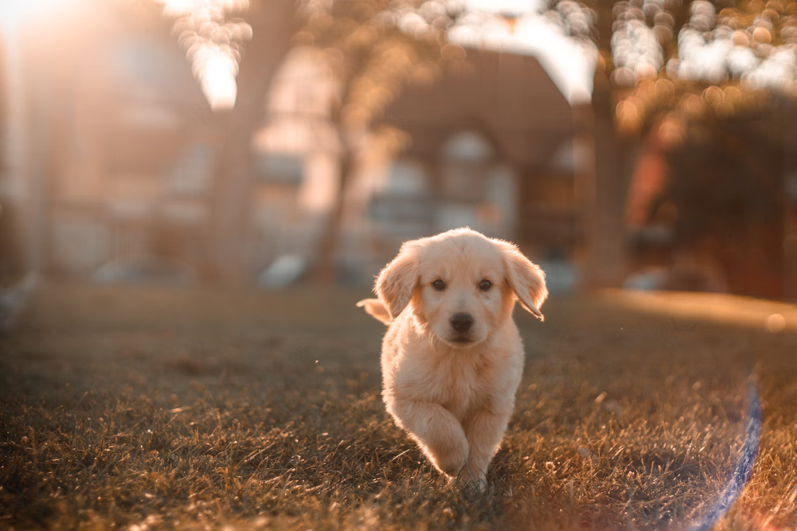
Notre mission
Depuis 2010, Quatre Pattes oeuvre sans relâche pour la protection et le bien-être des animaux en France. Notre mission est double : secourir les animaux en détresse et sensibiliser le public à la cause animale.
Chaque année, nous prenons en charge plus de 1000 animaux abandonnés, maltraités ou blessés. Grâce à notre réseau de familles d’accueil et à nos partenariats avec des refuges, nous leur offrons une seconde chance.
Votre soutien est essentiel pour continuer notre mission. Ensemble, nous pouvons faire la différence pour ces êtres qui comptent sur nous.
Histoires de Réussite
|
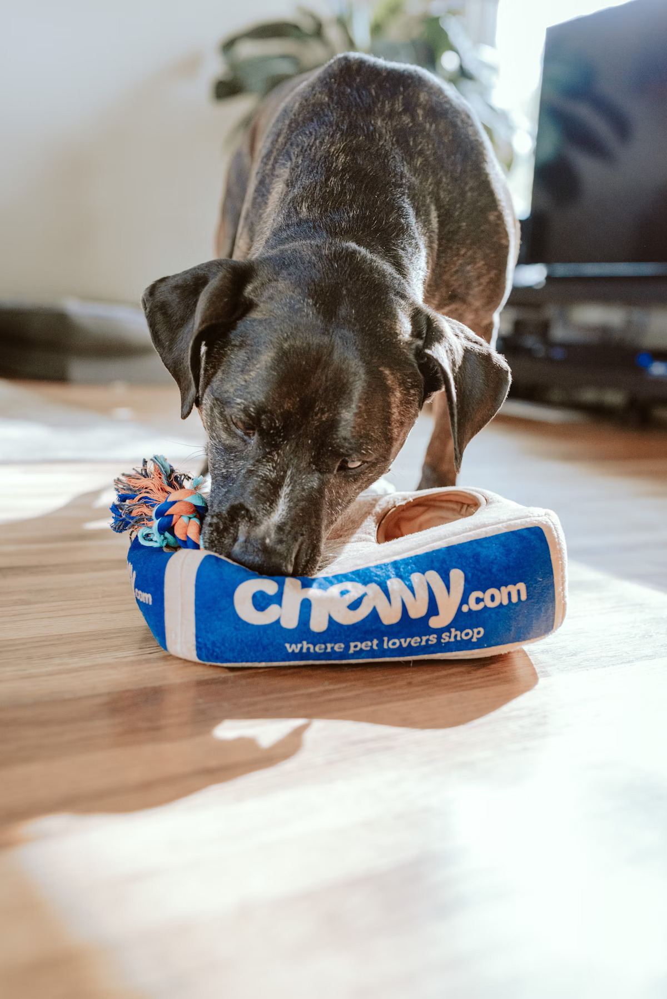 |
||
|---|---|---|
|
Luna
Trouvée dans la rue avec une patte cassée, Luna a été soignée et a retrouvé sa joie de vivre. Elle coule maintenant des jours heureux dans sa nouvelle famille. Janvier 2024" loading="lazy"> |
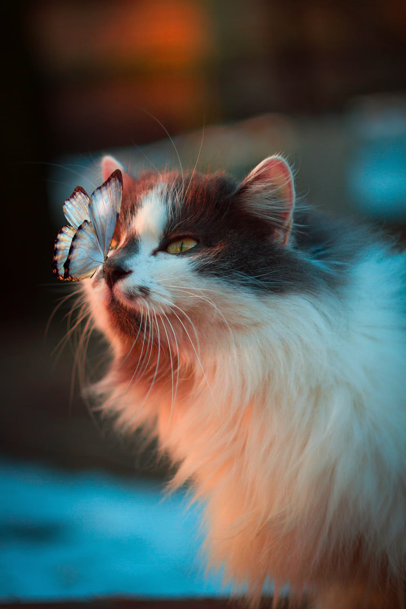 OscarAbandonné dans une forêt, Oscar était terrifié par les humains. Après des mois de patience et d'amour, il est devenu un chat confiant et affectueux. Mars 2024" loading="lazy"> |
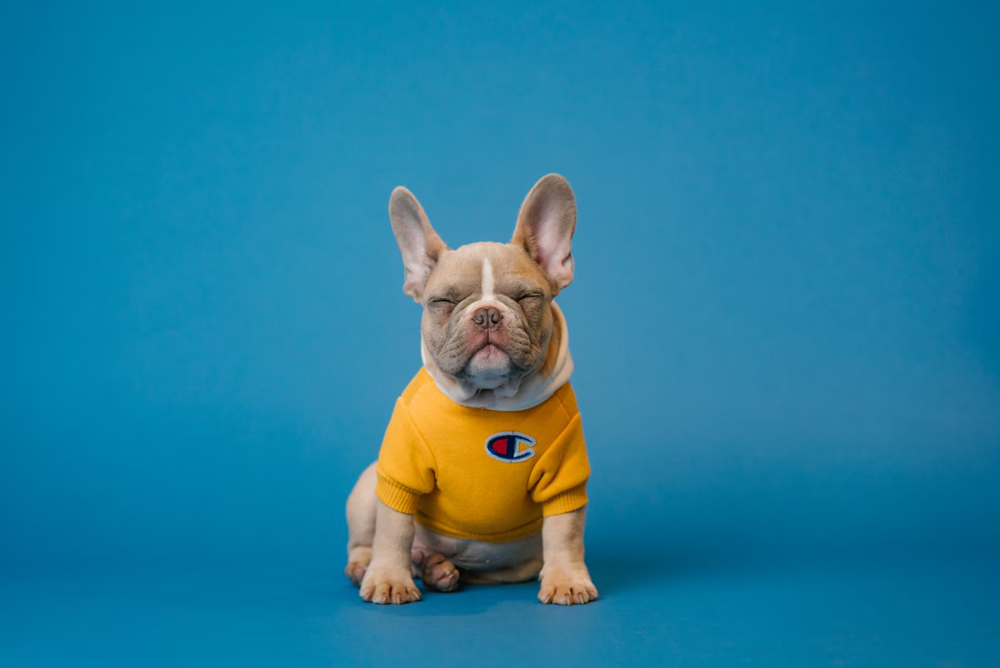 MaxSauvé d'un laboratoire, Max n'avait jamais connu l'amour. Aujourd'hui, il profite de sa liberté et fait le bonheur de sa famille d'accueil. Février 2024" loading="lazy"> |
Testez Vos Connaissances
Les associations gardent la majorité des dons pour leur fonctionnement
Les refuges ne prennent que les animaux en bonne santé
Les associations ont trop de moyens grâce aux dons
Notre impact
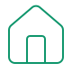
50+ Refuges
Partenaires à travers la France
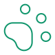
1000+ animaux
Sauvés chaque année
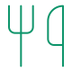
10 000+ repas
Distribués par mois
Témoignages
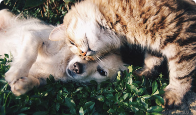
“Grâce aux dons, nous avons pu accueillir plus de 200 animaux cette année et leur offrir une seconde chance.”
Refuge des Quatre Pattes - Lyon
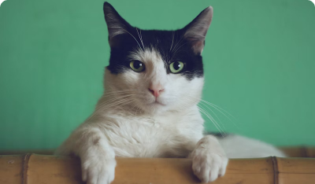
“Le soutien de Quatre Pattes nous permet de maintenir notre mission de protection des animaux sauvages en détresse.”
Sanctuaire Animal - Marseille
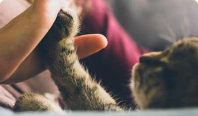
“Chaque don compte et nous aide à offrir un avenir meilleur aux animaux abandonnés.”
Refuge du Soleil - Paris